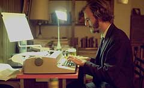
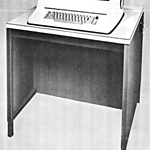
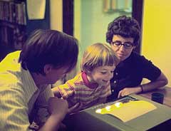

Loading
The first time-sharing systems at MIT, in the early sixties, provided remote access to users at Flexowriters connected to the machine with direct wires.
These typewriter-like devices were some of the first remote terminals.
By the time I began using the  CTSS time-sharing machine at MIT Project MAC, in 1963,
terminals were connected to the machine by modems, and one dialed a single digit to call the computer via a separate internal phone exchange,
a "private branch exchange" or PBX.
CTSS time-sharing machine at MIT Project MAC, in 1963,
terminals were connected to the machine by modems, and one dialed a single digit to call the computer via a separate internal phone exchange,
a "private branch exchange" or PBX.
That products such as the Bell 103A modem and the IBM 7750 communications computer were available shows that MIT was by no means the first to connect terminals to computers. Airline reservations like SABRE and stock trading applications were already commercial applications by then; such applications usually provided computer service to terminals used as "remote inquiry stations." (The 103A modem came out in 1962. BBN patented the modem in 1963.)

Angus Macdonald playing Adventure on a SelecTerm terminal in my apartment in Waltham, dialed up to the MIT PBX, 1973. Click for a larger view.
The first terminals I used on CTSS were IBM 1050 systems, with Selectric-style golf ball typewriters built into a substantial desk, with a large knee-side box of electronics and a dozen control switches on the front that selected different operation modes. A few 1050 systems had additional peripherals such as paper tape readers and punches. Teletype model 35s were also used on CTSS, but these devices were less desirable because they were slower, noisier, uppercase only devices, and because they used narrow roll-fed paper, as opposed to the 1050's wider paper.
Terminals were scarce at MIT, and were usually shared by many users. Some of the Computation Center staff had terminals in their offices, and some departments had terminals, usually shared by groups of several users. Most users, though, got access to the time-sharing machines by using the terminals in public or semi-public terminal rooms. (I was using CTSS in the 8th floor terminal room at MIT Project MAC when they announced that the Institute was closing because President Kennedy had been shot.)
The first people to have home terminals were those system programmers who might be called at any hour to investigate or repair a problem with the time-sharing system.
These folks took home a machine that might cost as much as half a year's salary, and had a leased phone line connected to the MIT data PBX installed at home.
They discovered that having a machine at home was useful not only for fixing the operating system, but also for programming and writing documents from home, and for sending  electronic mail to other users on the MIT system.
electronic mail to other users on the MIT system.

I got my first home terminal in 1967, when I was working on Multics at MIT Project MAC. It was an IBM 2741, the standard machine for the programming staff. Like the 1050, the 2741 had a Selectric mechanism built into a desk, but one smaller than the 1050's, and with a slimmer electronics box and fewer switches. The original 2741s were designed as "inquiry" terminals: the keyboard was normally locked, and the user was supposed to hit the ATTN button to get the attention of the computer, which would unlock the keyboard and let the user type one line, and then lock the keyboard on carriage return. This mode of operation was no good for time-sharing use, and we had to have two special features installed on the 2741's for CTSS (and later Multics) use. The 2741 used paper with perforations on each side, like printer paper, and had a tractor feed that kept the paper from going crooked and jamming. Annoyingly, the 2741 platen was a little narrower than the 14 7/8 inches wide regular line printer paper, and so Operations had to stock two sizes of paper, and more than once I brought home a box of the wrong size.
I remember when my home terminal was installed at my apartment at 140 Huron Avenue in Cambridge. The 2741 weighed over 300 pounds and took four people to get it up four flights of narrow stairs. Then I had three IBM CEs and two phone men in the apartment, and the phone guys were talking to a chain of colleagues at the various switching centers across Cambridge to MIT, setting up the leased line and "conditioning" it so that it would be free enough of noise to transmit data. The 2741 transmitted at 134.5 baud, somewhat faster than the 110 baud speed of the Teletypes, and used the EBCDIC character set.
When we began to bring Multics up, we needed mixed case terminals that used the ASCII character set,
and so we began with the new Model 37 Teletypes, which ran at the relatively high speed of 150 baud.
Not many MIT folks had Model 37s at home, but 37s were the preferred terminal for the Bell Labs folks working on Multics, such as Ken Thompson and Dennis Ritchie.
Then the GE folks obtained TermiNet 300s, which ran in ASCII at 300 baud, and those were highly prized as home terminals.
The easiest way to understand the cost of all these devices is to say that they cost about as much as a new Buick did.
Jerry Saltzer wrote about features and costs in
 Considerations in the Choice of Typewriter Terminals for Use With Multics, draft MIT memo.
Considerations in the Choice of Typewriter Terminals for Use With Multics, draft MIT memo.
[Dick Snyder] You mentioned the Terminet300.
When we first got them at CISL they only ran at 150 baud.
We couldn't get them up to 300 until we got the Datanet 300 communications front end.
What a happy day when the Datanet 300 went up and the Terminets doubled in speed.
The keys on the Terminet had little magnets on them and a keystroke was made by depressing the key which passed thru a wire loop that noticed the current induced by the magnet.
One time I was out in Phoenix working night shift with Noel Morris bringing up the 6180.
Noel had a bit of a temper you will recall.
At one point he got angry and smashed his fist down on the Terminet 300 keyboard.
All of the keys in the shape of a fist outline broke as the magnets were smashed.
Noel never 'fessed up to it - I'll bet the people who had to fix that Terminet wondered about the strange pattern of the broken keys.

Geoff Lepper playing the animal game on an Execuport, assisted by his parents, September 1974. Click for a larger view.
The high cost of terminals meant that the development groups tried to find ways to get as much terminal per dollar as possible. The early 70s saw many manufacturers entering the terminal market, with machines that undersold IBM and Teletype. I moved my 2741 to several apartments, and then replaced it with a Datel-30, assembled by Datel with a lighter-duty version of the Selectric mechanism that they bought from IBM. It broke down a lot, and I can remember having to bring it in for repair repeatedly. Then MIT found another terminal manufacturer who made a device using a heavy duty Selectric, and this worked quite well for me as a home terminal. Other programmers had to share portable terminals, such as Texas Instruments Silent 700s and Execuports, carrying them home for an evening and returning them the next day.
One nice thing about a Selectric as a home machine was that its output was very high quality, suitable for correspondence. Teletype 37 output, TermiNet 300 output, and even line printer output weren't really letter quality. Another advantage of Selectric-based mechanisms was that you could replace the typeball, to produce output in a different font, or to run APL programs.
About 1970, GE also produced a 1200 baud terminal, the TermiNet 1200, but I don't think anybody had one at home; for one thing, this high speed was beyond the ability of the 103A modem. To use a TN1200, one used an asymmetric modem, the Bell 202C6, which supported a 1200 baud computer-to-user channel and a 75 baud "reverse" channel. Alternatives to Bell modems were slow to enter the market because the phone company had complex rules to "protect the network" from nonstandard voltages and signals. Acoustic couplers, that clamped a phone handset into some rubber cups and used the phone's microphone and speaker to transmit data, were used by some -- I used one with my Datel -- but they were most often used with the portable terminals.
When I changed jobs from MIT to Honeywell, I gave up the 2741 and got a TermiNet 300 at home, and my leased line to MIT was changed to be a leased line to the Honeywell PBX instead. Having a PBX line at home had advantages besides being able to log in; the data PBX had tie lines to the regular voice PBX, and so one could call colleagues in Phoenix easily, and even make long distance calls charged to the company, a nice perk. In the early 70s, the ARPANet also began to bridge the electronic mail systems of individual machines, so that one could log into the MIT Multics system and then communicate with other computer users around the world.
Having a home terminal allowed programmers to be flexible in their hours of work, and to get more done. If the choice was between competing for a pool terminal in a terminal room at work, and staying home programming in quiet and comfort, staying home often won. Home terminals helped programmers get access to the time-sharing systems late at night, when system response was much better. In addition to regular assignments, people also felt free to do more personal hacks from their home terminals, many of which became system enhancements that nobody had asked for, but that were accepted since they were a fait accompli.
I did a lot of computing from home over the years, writing both programs and memos, and working on projects both assigned and unassigned. System programmers didn't have to wait for the invention of the personal computer to have unmetered computing at home. Often, I would log in to the mainframe from home as soon as I got there, and leave the terminal logged in until I went to bed. If your process was inactive for an hour, the operating system logged you out, so I wrote a tiny program that typed the time every half hour, like a high-tech cuckoo clock. If the time stopped typing, I knew the system had crashed, and could call the operators (if they didn't call me).
Another reason I used to stay logged in was to sign on to the "online consultant" facility, which would send a message from a user with a problem to whatever consultant was logged in. I wrote this facility in the early 70s when I worked at the MIT Information Processing Center; descendants of it are still in use on MIT's Athena systems today.
When the Big Snow of 1978 hit, it came with plenty of warning. So I took two cases of Ballantine IPA and a full box of terminal paper home, and reminded the MIT operators to set the Multics machine for unattended reboot. The blizzard paralyzed the Boston area for a week, but I was able to work. The MIT Multics had only a few users logged in, and response was great. I wrote most of the initial transaction processing facility for Multics during that time, and rigged up a way to test it using absentee processes.
At the end of the 70s, Honeywell replaced my TN300 with a device called a Rosy-21, which used a wire-matrix print head. These were great terminals, quieter, with few moving parts and much better reliability. About this time, also, video terminals began to become widely available, from several manufacturers. Using Multics Emacs over a 300 baud line was painful but possible; higher modem speeds, first 1200 and then 2400 baud, arrived in the 80s just in time for full screen editing.
About this time I left the Multics team and took a job at Tandem, which used a very different kind of terminal. Characters were still sent asynchronously, but the terminal could be programmed to hold a "form" and to send a whole screenful in "block mode." The Tandem full-screen editor was a big step down from Emacs. But the company did supply me with a home 6520 terminal (made by Zentec), and later a 6530 with a big green-screen monitor, and these terminals were adequate to let me program and handle mail from home via 1200 baud dialup.
Terminal emulators on PCs replaced terminals in the late 80s. There were four phases to switching over: first, just replacing the terminal with a PC that ran a terminal emulator; second, as disk storage shrank in price and size, moving mainframe functions like address books, calendar, resume updating, and personal databases to the PC; third, switching over to editing, compiling, and debugging on the PC, accessing shared source database by file copying; and fourth, dispensing with terminal sessions except for rare maintenance operations, doing all mail, news, bulletin board, appointments, file sharing, and cooperative work using local PC clients that connected to servers without using an interactive session. Modem speeds also jumped during the 90s: in 1990, 1200 baud was respectable; five years later, 28,800 baud was considered limiting.
My wife brought home a company Mac Plus in the late 80s, and we used this machine over dialup to access Tandem's systems with a terminal emulator for several years, as well as external services such as CompuServe and AOL. I carried a company supplied 18-pound Mac Portable for a couple of years.
Logging in from home tended to blur the difference between the work place and the home place: you worked when you had the time, inclination, and inspiration. Portable computers and virtual private networks take this another step further, allowing one to carry one's office anywhere and work. The next step was wireless connection using smart phones, which allowed your portable office in your pocket to access all the information in the company.
The late  Bob Bemer wrote an interesting article for Datamation in 1984,
describing his experiences working at home, titled
Bob Bemer wrote an interesting article for Datamation in 1984,
describing his experiences working at home, titled  "Working on Moon Mountain."
"Working on Moon Mountain."